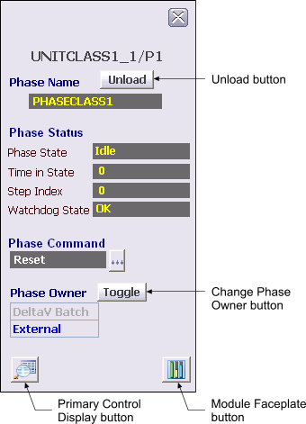

Unit phase faceplate display
DeltaV Operate supports a unit phase faceplate display. It is accessed from the unit module faceplate display and appears to the left of the unit module's faceplate display.
The unit phase faceplate display supports the following:
Showing phase name
Showing phase status (state, time in state, step index, watchdog state)
Showing owner (DeltaV Batch vs. External (operator) ownership)
Providing a means to change ownership from DeltaV Batch to External (operator) by using the Change Phase Owner toggle button
Providing a means to issue commands to the active phase (Abort, Hold, Restart, Reset, and so on)
Providing a means to unload the phase when it is IDLE by using the Unload button
Providing a means to select the default monitor on which to present the faceplate

A standard detail display picture is provided for phases within unit modules. You can only navigate to the unit phase detail display through the unit phase faceplate display.
Use the Primary Control button to open the primary control display.